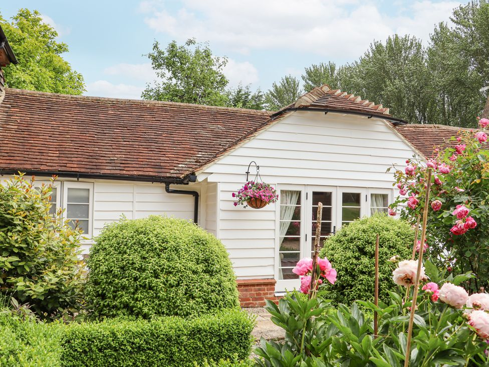

West Peckham, KentThe countryside escape
Oast Cottage
A peaceful corner of Kent. Garden time, countryside walks and unhurried days exploring the villages around West Peckham.
Words from our guest book
Read our guests’ reviews →“The best holiday stay ever.”An excerpt from an Oast Cottage guest-book review